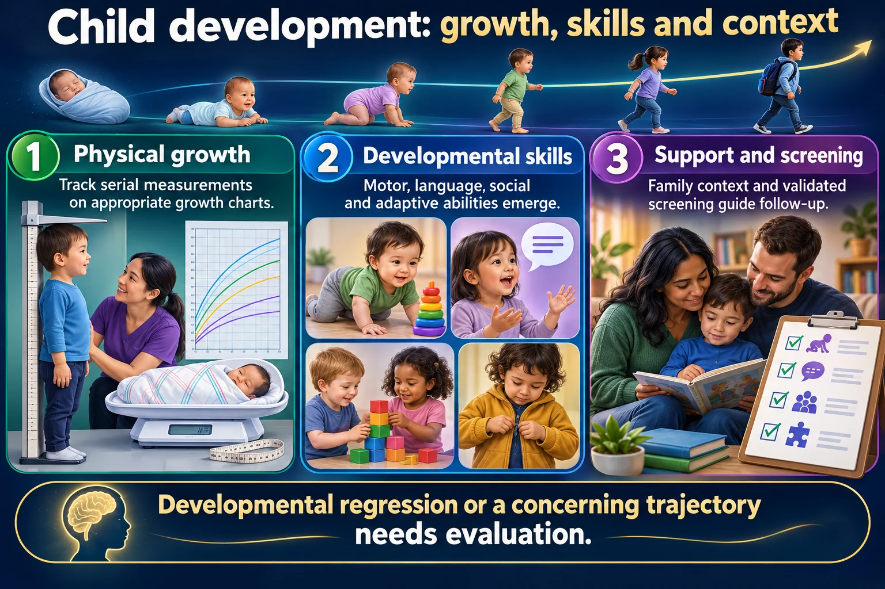

🤷 Growth & development, birth to eighteen
Erikson, Piaget, play and fear for all five stages, and the milestones that actually get asked. Almost every stage question is really asking what this age is afraid of — match the intervention to the fear and it answers itself.
🎯 The five stages
One table answers a third of this course.

Developmental regression or a concerning trajectory needs evaluation.
Read the picture
Physical growth
Track serial measurements on appropriate growth charts.
Developmental skills
Motor, language, social and adaptive abilities emerge.
Support and screening
Family context and validated screening guide follow-up.
Variation
Children develop at different rates; patterns and loss of skills matter.
Theories
Piaget and Erikson offer frameworks, not diagnostic tests or rigid deadlines.
Family teaching
Use age-appropriate safety, play, communication and anticipatory guidance.
👶 What each stage needs from you
- Infant — keep the parent present, respond promptly. Trust is built by needs being met consistently.
- Toddler — offer two acceptable choices, never an open question. “Pink cup or blue cup?”, not “Will you take your medicine?”
- Preschooler — a simple honest explanation, and let them handle the equipment.
- School age — give tasks and choices, explain the equipment, respect privacy.
- Adolescent — privacy and confidentiality, involve them in decisions, allow peer visits.
🧠 Piaget, in one line each
- Sensorimotor (0–2) — learns through senses and movement. Object permanence at 9–10 months.
- Preoperational (2–7) — magical thinking, animism, egocentrism, centration.
- Concrete operational (7–11) — conservation, classification, logic about concrete things.
- Formal operational (11+) — abstract and hypothetical thinking.
Concrete versus formal decides how you teach a procedure, not just what you say.
👶 The first year
Four motor milestones, three growth numbers.
📈 The growth numbers
- Up to 10% of birth weight lost in the first 3–4 days
- Weight doubles by 6 months, triples by 12 months
- Length up 50% at one year
🧠 Fontanels
- Posterior closes 6–8 weeks
- Anterior closes 12–18 months
Bulging at rest = raised ICP. Sunken = dehydration.
😴 Reflexes — when they go
- Stepping — ~6 wk
- Tonic neck — 3–4 mo
- Rooting, palmar, extrusion — ~4 mo
- Moro — ~6 mo
- Plantar — 8–9 mo
- Babinski — ~1 yr
A reflex that persists past its date is the finding, not the reflex itself.
🚨 Safety in year one
- Back to sleep, every sleep. Firm bare crib, no co-sleeping.
- Rear-facing car seat, back seat, until at least 2 years
- No honey before 12 months — infant botulism
- No cow's milk before 12 months
- Choking: no nuts, grapes, hot dogs, popcorn
🍼 Feeding, in order
Breast milk or formula only for about 6 months. Both are 20 kcal/oz. Breast milk needs vitamin D and runs out of iron by 4–6 months. Then iron-fortified cereal first, then one new food at a time so an allergy can be spotted.
🧠 Fontanelles
The posterior closes first. That is the one people reverse.
- Posterior — closes about 1 to 2 months
- Anterior — the big diamond, closes 12 to 18 months
Normal is flat and soft, and a pulsation is expected — it is an artery under a membrane, and it shows more when the baby cries.
- Sunken → dehydration, fluid volume deficit
- Bulging → raised intracranial pressure, alongside a high-pitched cry and a widening head circumference
Judge a bulge on a calm, upright baby. A fontanelle can bulge while a baby screams or lies flat, and that on its own is not the emergency.
😭 Crying, and the one cry that is not normal
A well infant cries 1 to 3 hours a day. It is the only vocabulary they have: hungry, thirsty, tired, wet, too hot, too cold, hurting, or done with being handled.
When a parent says “she cries all the time”, assess before you act — ask for the pattern, frequency and quality. Without that, calling the provider gives them nothing to work with, and calling it normal dismisses her.
- Rhythmic, builds, settles with feeding or holding — ordinary
- Inconsolable, drawing the legs up, worse after feeds — think colic or reflux
- High-pitched, shrill, unrelenting — a neurologic cry. Raised intracranial pressure until proven otherwise, alongside a bulging fontanelle and a widening head circumference. Report it straight away.
Never brush off a parent's worry to stay on schedule. She has heard this baby cry more than anyone; if she says the sound has changed, that is data.
🧔 Toddler & preschooler
Toddlers need control. Preschoolers need explanation.
🏃 Milestones you should recognize
- 15 months — walks alone, 3–5 words
- 2 years — runs, 2-word phrases, ~50% intelligible
- 3 years — tricycle, 3-word sentences, ~75% intelligible
- 4 years — hops, dresses self, ~100% intelligible
- 5 years — skips, ties laces, prints name
Rough rule: words per phrase roughly matches age in years at 2 and 3.
🚽 Toilet training: the readiness list
Readiness is the child's, not the calendar's. Physiologic control arrives around 18 to 24 months, and pushing before the signs are there makes it take longer.
- Sits on the toilet 5 to 8 minutes without getting up or crying
- Stays dry about 2 hours, and recognizes the urge
- Walks to the bathroom and knows which room it is
- Follows a simple direction — “go sit on the potty”
- Pulls clothing up and down
- Shows interest, and wants to please
Not required: dressing herself completely, or climbing onto the seat unaided — help with positioning is fine. Order of control: bowel before bladder, daytime before night, and night dryness can take years longer.
Crying on the potty is the finding that matters. A child who gets down after 2 to 3 minutes in tears is not being stubborn — she is distressed, and distress turns into resistance, which makes training last longer. Back off and try again later.
✂ Building fine motor skills
At 4 to 6, the answer is usually scissors. Preschoolers can hold and use them correctly, and cutting is the classic activity a nurse recommends to parents who ask how to build the skill.
- 3 years — copies a circle, builds a tower of 9–10 blocks
- 4 years — uses scissors, copies a square, draws a person with 3 parts, cuts food with a table knife
- 5 years — prints their name, ties laces, draws a person with body parts
Watch the distractors on this one. Dolls and action figures are imaginative play, not fine motor. A house of cards and small Lego need a steadier hand than a preschooler has — those are school-age, 6 to 12. And cursive is school-age too.
🚨 The leading cause of death in toddlers
Unintentional injury — and every bit of it is preventable teaching.
- Drowning — never alone near water, including buckets and baths
- Poisoning — locked cupboards; toddlers explore by mouth
- Falls — stair gates, window guards
- Burns — pot handles turned in, water heater turned down
📋 The screening calendar
- Anemia — 15 and 30 months
- Lead and autism — 18 and 24 months
- Vision — from 3 years
Lead above 5 mcg/dL is abnormal: find and remove the source and recheck. Chelation is for 45 mcg/dL or higher.
🥛 Feeding a toddler
- Cow's milk capped at 16–24 oz/day — calcium blocks iron absorption
- Whole milk until 2, then low-fat
- Physiologic anorexia — the appetite drop is expected, not pathology
- Choking foods: hot dogs, whole grapes, raw carrots
⭐ The two answers that keep reappearing
- Toddler tantrum → ignore the behavior, keep them safe. Attention reinforces it.
- Toddler resisting care → offer two acceptable choices.
Time-out is one minute per year of age. And preschoolers think illness is punishment — say plainly that it is nobody's fault.
🎒 School age & adolescent
One needs to achieve. The other needs to belong.
🚨 The 12-month check — what you report
The mirror of the 6-year-old question: which finding in a 12-month-old needs reporting? Expected at 12 months is walking, a pincer grasp, babbling with a few real words, and a birth weight that has tripled. Report anything below.
- No babbling, and no attempt to imitate sounds
- No pincer grasp — still raking with the whole hand
- Cannot bear weight or pull to stand with support
- Anterior fontanel still wide open — it normally closes by about 12–18 months. A late one raises hypothyroidism, rickets, raised ICP and chromosomal causes
- Weight not tripled, or the weight crossing down through percentile lines
Losing a skill already gained — babbling that stops, sitting that goes, the social smile fading — outranks every other finding here. Regression is reported immediately, not watched.
![Well-child visits: what gets checked and when. At every visit, history, physical exam and growth, development and behavior, nutrition and sleep, oral health, safety, and vaccine review. Newborn blood-spot, hearing and critical heart-defect screens. Formal developmental screens at 9, 18 and 30 months; autism screens at 18 and 24 months. Anemia screening and lead review at 12 months, dental home by the first birthday. Blood pressure annually from age 3. Vision acuity at 4 and 5; hearing at 4, 5, 6, 8 and 10 years. Lipids once at 9 to 11 and once at 17 to 21; anxiety screening annually from 8; depression and suicide-risk screening annually from 12. A callout explains that pubic hair at age 6 is earlier than expected and needs follow-up.](../img/infographics/well-child-visits.webp)
🚨 Pubic hair in a 6-year-old — report it
The question is usually written as “which finding should the nurse report?” in a 6-year-old, and this is the one. Earlier than expected means before 8 in girls or 9 in boys.
- Pubic hair on its own may be premature adrenarche — early adrenal hormones — and not true precocious puberty
- It is assessed to rule out early puberty, a hormone exposure or an endocrine disorder. True early puberty speeds bone maturation and can reduce adult height
- The clinician checks growth rate, progression and other puberty signs; hormone tests or a bone-age X-ray may follow
- Arrange a visit now, not at the next annual checkup
The word is precocious puberty. Not “pernicious” — that is the anemia.
🎓 School age — 6 to 12
- Industry vs inferiority — they need to do things well
- Cooperative play, team games, collecting
- Growth slows to about 5 lb and 2 in a year
- Scoliosis screening in early adolescence, at the growth spurt — forward bend test
- Fears loss of control and being left out
🧑 Adolescent — 12 to 18
- Identity vs role confusion — they need to fit in
- Adolescence delivers 20–25% of adult height
- Vaccines at 11–12: Tdap (then every 10 y), HPV 2 doses 6–12 mo apart, meningococcal with a booster at 16
- Commonly deficient in calcium, iron and zinc
- Fears being different; body image is the adherence problem
📊 Tanner, in one line
Girls start with breast budding, and menarche comes last, roughly two years later. Growth stops 2–2.5 years after menarche.
Boys start with testicular enlargement. Girls start about two years earlier, which is why the growth spurts do not line up.
🚨 Leading cause of adolescent death
Unintentional injury — mainly motor vehicle crashes — then suicide and homicide. Risk-taking peaks because the reward system matures before the judgment system does.
Ask about mood and self-harm directly, and in private. Asking does not plant the idea.
⚠️ Exam traps
- School age wants facts and control; adolescents want privacy and peers. The wrong intervention for the wrong stage is the classic distractor.
- Preschoolers read a procedure as punishment — the answer is reassurance, not just distraction.
- Regression under stress is normal. Normalize it to the parents; do not treat it.
- Separation anxiety and stranger anxiety overlap in age — read which behavior is described, not the months.
- Ear assessment flips to up and back after age 3.